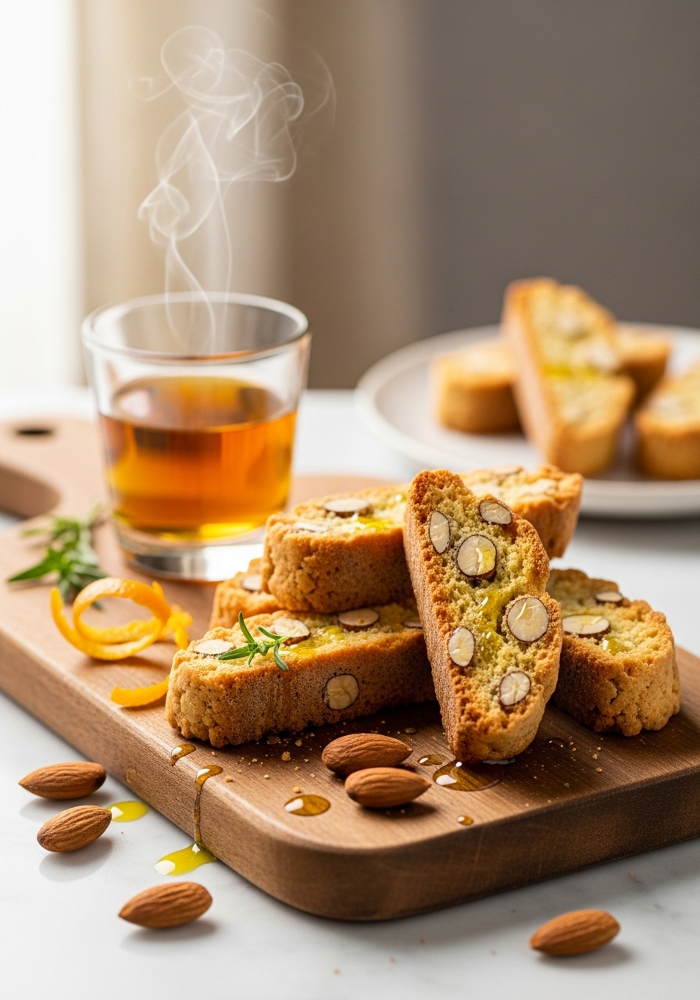
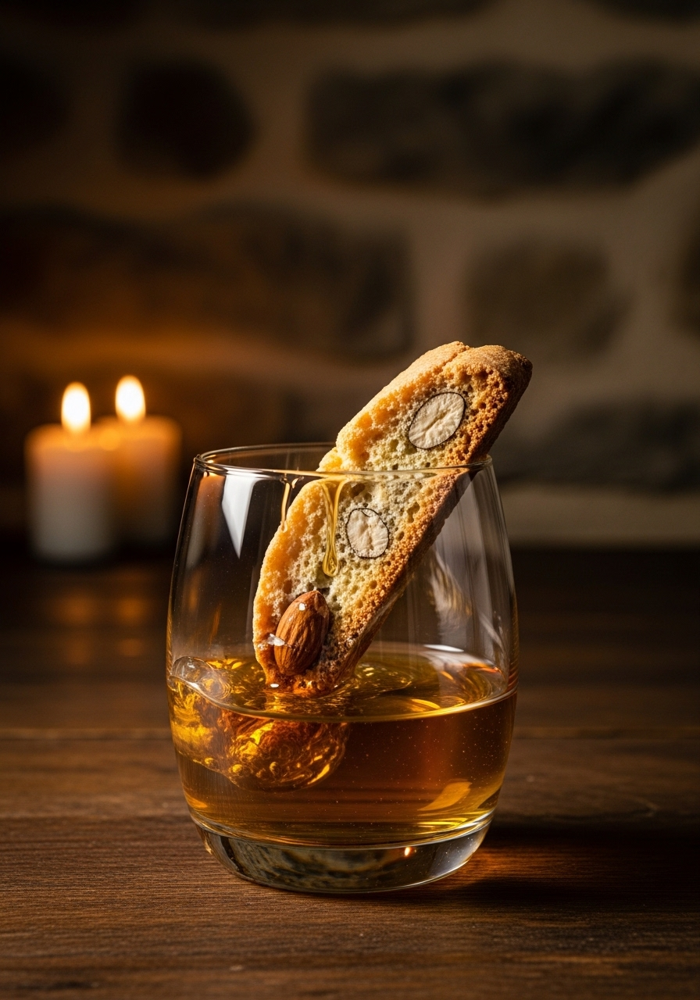

I cantucci toscani — chiamati anche 'biscotti di Prato' — sono i biscotti più famosi della Toscana e tra i più imitati al mondo. Duri, croccanti, profumati di mandorle tostate e scorza d'arancia, sono pensati per essere inzuppati nel Vin Santo DOC — il vino da dessert toscano per eccellenza. La ricetta originale del pasticcere pratese Antonio Mattei, depositata nel 1858, è rimasta praticamente invariata: farina, zucchero, uova, mandorle intere non pelate, e nient'altro. Niente burro, niente lievito chimico. Solo la semplicità della tradizione.

ToscaniLa storia dei cantucci toscani è legata indissolubilmente a Prato e alla famiglia Mattei. Nel 1858, il pasticcere pratese Antonio Mattei aprì la sua pasticceria in Via Ricasoli a Prato e iniziò a produrre i 'biscotti di Prato' secondo una ricetta che sosteneva fosse di origine rinascimentale. I suoi biscotti vinsero la medaglia d'argento all'Esposizione di Firenze del 1861, appena un anno dopo l'Unità d'Italia, e poi premi a Londra e Parigi. La pasticceria Mattei esiste ancora oggi, in via Ricasoli, e produce cantucci con la stessa ricetta originale di oltre 160 anni fa. Il nome 'cantuccio' deriva probabilmente da 'canto' (angolo, spigolo) — il riferimento alla forma spigolosa del biscotto tagliato in diagonale. La tradizione vuole che i cantucci vengano serviti alla fine del pasto con un piccolo bicchiere di Vin Santo DOC toscano nel quale inzupparli.
Nel mondo anglosassone, tutti i biscotti italiani a doppia cottura vengono chiamati genericamente 'biscotti' — termine che in italiano significa semplicemente 'cotto due volte' (bis-cotto). In Toscana, questi specifici biscotti alle mandorle di Prato si chiamano 'cantucci' o 'biscotti di Prato', mai semplicemente 'biscotti'. La doppia cottura (prima il filone intero, poi le fette) è il metodo che li rende così duri e croccanti — e quindi perfetti per l'inzuppo nel Vin Santo senza sfaldarsi. La ricetta originale di Mattei non include burro (a differenza di molte versioni commerciali moderne), né lievito chimico nella versione più tradizionale. Le mandorle devono essere intere e non pelate — un dettaglio spesso ignorato nelle imitazioni internazionali che usano mandorle pelate o a scaglie.
Ingredienti
Procedimento

I cantucci toscani sono uno dei dolci italiani che si conserva meglio: in una scatola di latta o in un contenitore ermetico durano facilmente 3-4 settimane senza perdere croccantezza. Anzi, migliorano con il tempo — gli aromi delle mandorle tostate e dell'arancia si intensificano. Tra le varianti più diffuse: cantucci al pistacchio (con pistacchi di Bronte in sostituzione delle mandorle), al cioccolato fondente (con gocce di cioccolato nell'impasto), alla nocciola, e la versione moderna 'morbida' (con più burro e cottura singola) — quest'ultima però non è la ricetta tradizionale di Prato. L'abbinamento classico con il Vin Santo DOC toscano è un'esperienza gastronomica unica: il Vin Santo ambrato, dolce e leggermente ossidato, con le sue note di miele e albicocca secca, contrasta e completa perfettamente la croccantezza e il profumo di mandorle dei cantucci.
Il filone era troppo freddo al momento del taglio. I cantucci vanno tagliati quando sono ancora caldi (5-10 minuti dopo la prima sfornata) ma non bollenti. Usa un coltello a lama liscia e affilata con un movimento deciso e verticale — non segare avanti e indietro.
La ricetta originale di Prato richiede mandorle intere con la buccia: sono l'ingrediente identitario. Puoi sostituirle con pistacchi, nocciole o noci per varianti moderne. Per versioni senza frutta secca, aggiungi gocce di cioccolato fondente o scorze d'arancia candite.
Qualsiasi vino da dessert dolce funziona bene: il Passito di Pantelleria, il Moscato d'Asti, il Marsala vergine. Fuori dall'Italia, il Porto vintage è un abbinamento eccellente. Per una versione analcolica, inzuppali nel caffè espresso o nel tè nero forte.
Il secondo passaggio in forno (la biscottatura) non è durato abbastanza. I cantucci devono essere completamente asciutti e secchi: il colore del taglio deve essere giallo chiaro, non ancora umido al centro. Rimetti in forno per altri 5-7 minuti a 160°C. Lascia raffreddare completamente su una griglia prima di chiuderli: si induriscono ulteriormente raffreddandosi.
La ricetta originale di Antonio Mattei non prevede burro — la durezza e croccantezza caratteristica dei cantucci dipende proprio dall'assenza di grassi aggiunti. Con il burro, i cantucci diventano più morbidi e si conservano meno. Alcune versioni moderne aggiungono 50g di burro per un risultato più friabile: è una scelta gustosa ma non tradizionale.